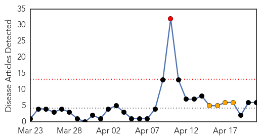
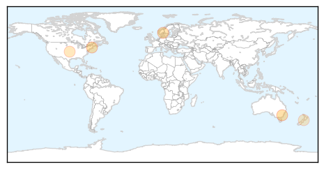
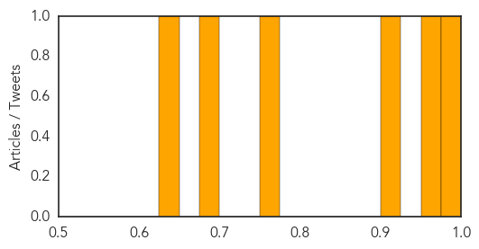
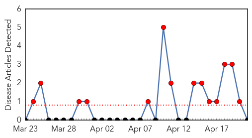

Influenza
30-Day Web Trend
1 alerts, 4 warnings

30-Day Twitter Trend
3 alerts, 0 warnings
Article Locations
Article Confidences
Top Articles:
- 0.997
- Man flu? When 'the flu' is really just a cold
- 0.962
- Wikipedia Can Help Estimate Levels Of Influenza-Like Illnesses And Track The Spread Of Flu : News : Headlines & Global News
- 0.919
- Otters Aren't Just Adorable, They Matter to Human Health
- 0.764
- Wikipedia traffic can predict flu levels 2 weeks before CDCP
- 0.700
- Ginseng has Influenza-Fighting Properties : Physical Wellness : Counsel & Heal
- 0.643
- No free flu jabs for homecare staff
Top Tweets:
-
No tweets found for Apr 21, 2014
Mold/Fungal
30-Day Web Trend
14 alerts, 0 warnings

30-Day Twitter Trend
0 alerts, 0 warnings

Article Locations

Article Confidences

Top Articles:
-
No articles found for Apr 21, 2014
Top Tweets:
-
No tweets found for Apr 21, 2014